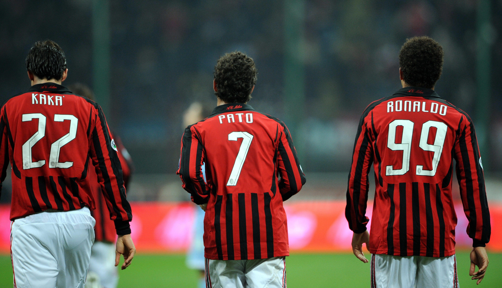

Sobre qualidade de vida
Qualidade de vida é um conceito amplo que envolve o bem-estar físico, mental, emocional e social de um indivíduo ou de uma população. Ela vai além da simples ausência de doenças, incluindo aspectos como acesso a serviços de saúde, educação, segurança, lazer, trabalho digno, equilíbrio entre vida pessoal e profissional, e um ambiente saudável.
Qualidade de vida é um conceito amplo que envolve o bem-estar físico, mental, emocional e social de um indivíduo ou de uma população. Ela vai além da simples ausência de doenças, incluindo aspectos como acesso a serviços de saúde, educação, segurança, lazer, trabalho digno, equilíbrio entre vida pessoal e profissional, e um ambiente saudável.